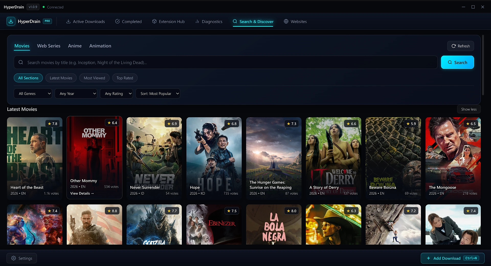
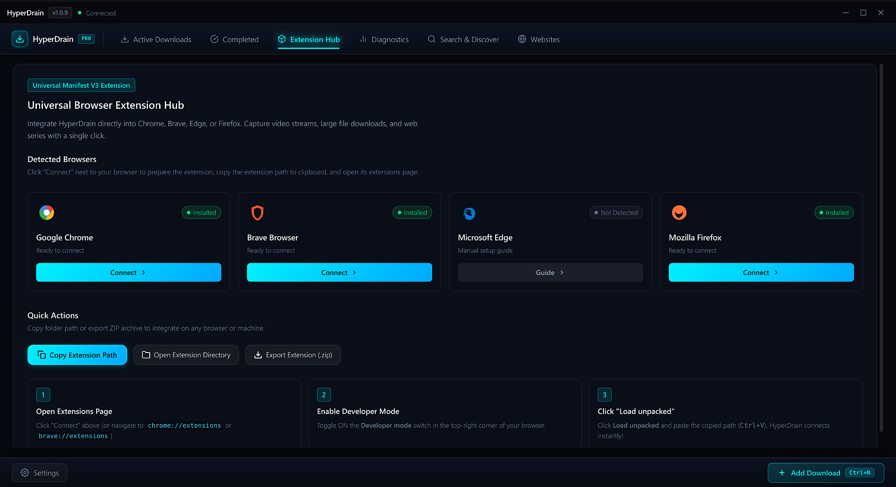
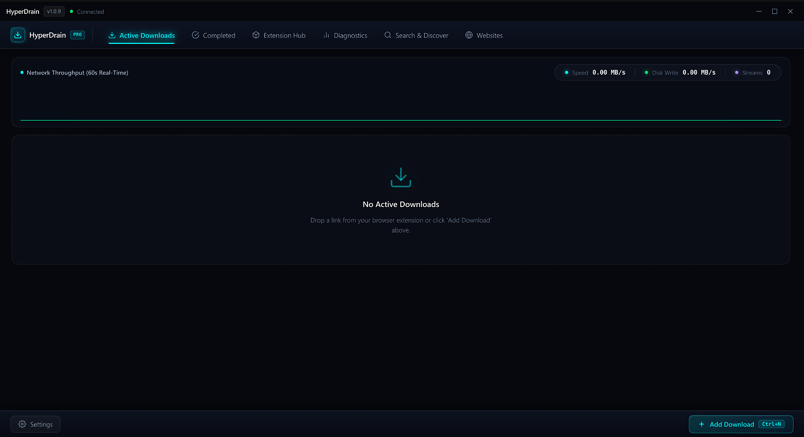
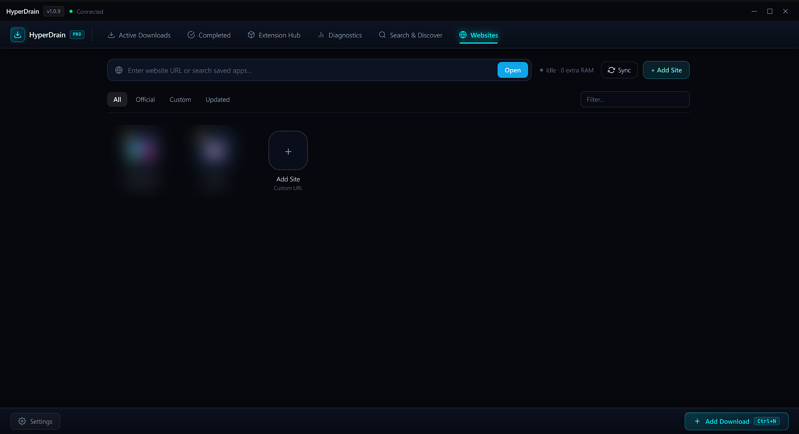

Fast downloads on unstable links.
Thirty-two streams keep large transfers moving across drops.
HyperDrain-1.1.0.AppImage (145.9 MB) for Linux x64.




Thirty-two streams vs. one
Compare parallel WriteAt transfers against single-socket browsers.
Single TCP socket; copies partial temp chunks on finish.
Concurrent byte ranges with instant fallocate reservation.
Four workspaces inside one window
Select a workspace to inspect the live interface.
Connect Chrome, Brave, Edge, or Firefox, or export the ZIP archive.
Filter catalogs by genre, year, and rating without leaving the app.
Track network speed, disk write rate, and worker streams live.
Open isolated web sessions with automatic HLS and MP4 detection.
Universal Browser Extension Hub connecting Chrome, Brave, Edge, and Firefox.
Installers and release log
Synced directly from GitHub Releases.
- Target
- Ubuntu and Debian x64
- Engine
- Go HTTP/2 with fallocate
- Storage
- SQLite WAL
- Wake
- hyperdrain://wake
curl -fsSL https://github.com/darkangle4022211-cpu/hyperdrain/releases/download/v1.1.0/HyperDrain-1.1.0.AppImage -o ~/HyperDrain.AppImage && chmod +x ~/HyperDrain.AppImage && ~/HyperDrain.AppImage- Protected Websites browser and app launcher
- Extension Hub and batch ZIP capture
- Download-only mode and proxy bypass sync
| Version | Published | Package | Notes |
|---|---|---|---|
| v1.1.0 | Nov 20, 2026 | HyperDrain-1.1.0.AppImage (145.9 MB) | Release |
| v1.0.9 | Oct 23, 2026 | hyperdrain_1.0.9_amd64.deb (126.8 MB) | Release |
| v1.0.8 | Oct 20, 2026 | hyperdrain_1.0.8_amd64.deb (126.8 MB) | Release |
| v1.0.7 | Oct 16, 2026 | hyperdrain_1.0.7_amd64.deb (154.6 MB) | Release |
| v1.0.6 | Oct 14, 2026 | hyperdrain_1.0.6_amd64.deb (154.6 MB) | Release |
Leave a review
Share transfer speed notes on GitHub Issues.
Published reviews
Loading reviewsChecking GitHub for published reviews…